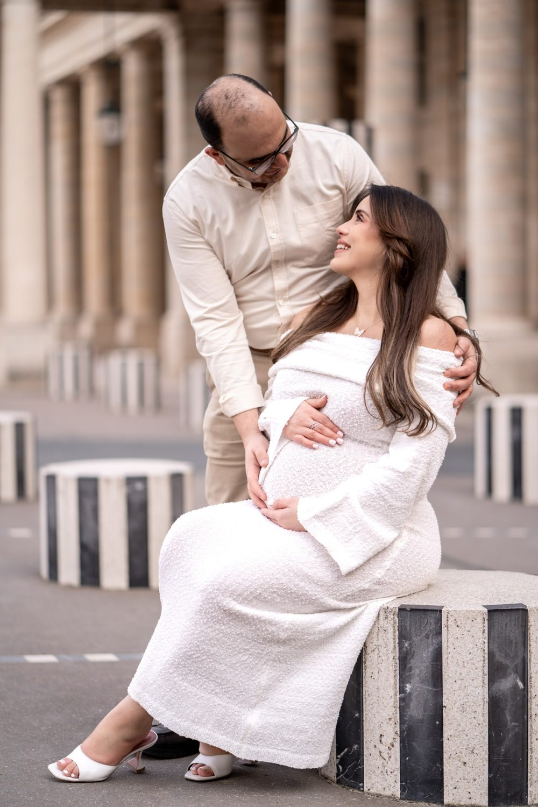
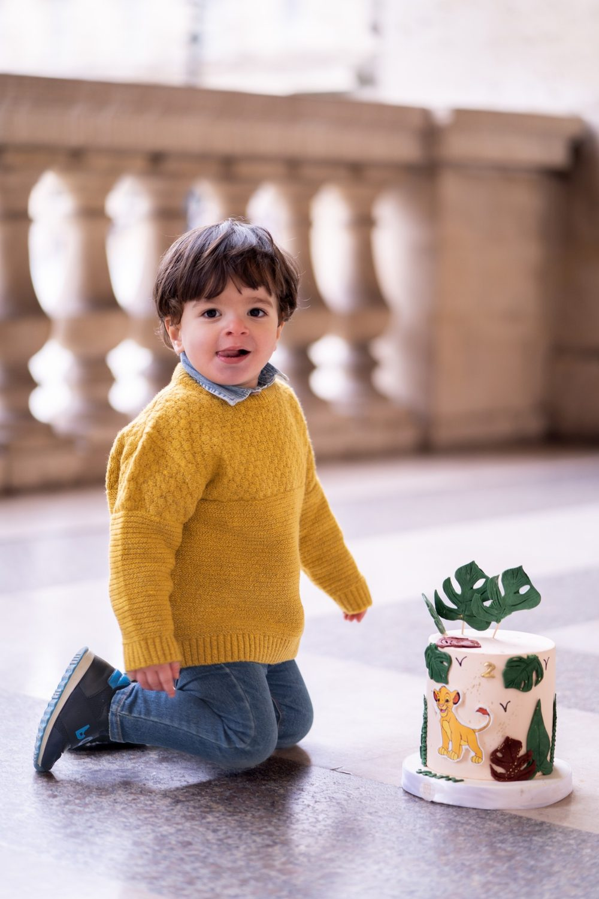
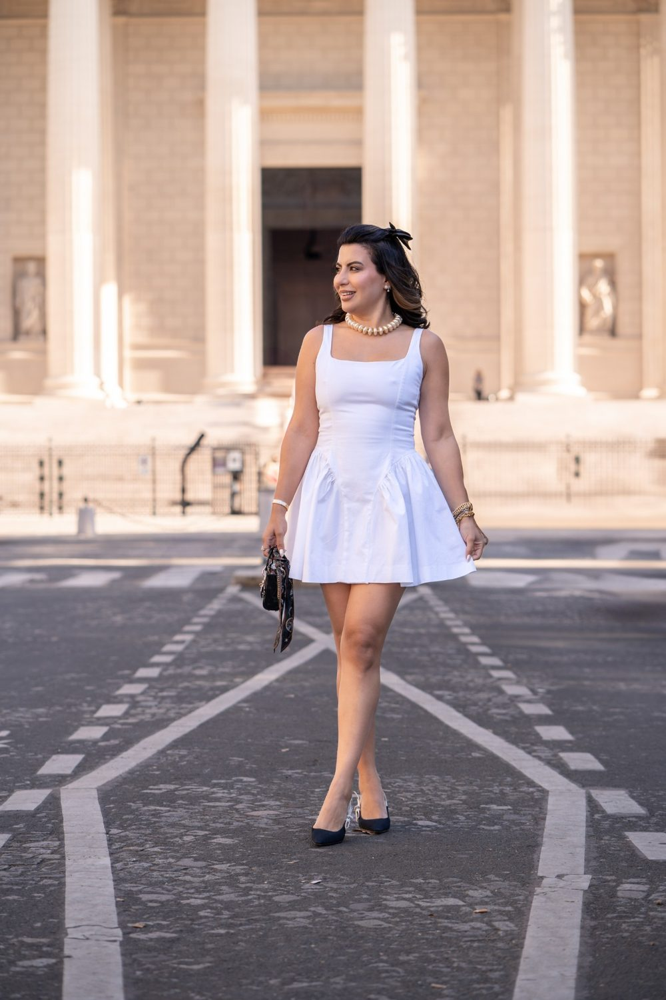

Photographe et vidéaste à Versailles
Versailles est la ville du château, de ses jardins, du Grand Canal et du quartier Saint-Louis.
Où photographier à Versailles
Château de Versailles
Façade dorée et cour d'honneur.
Jardins de Versailles
Parterres, bosquets et bassins.
Grand Canal
Miroir d'eau en croix.
Marché Notre-Dame
Halles et étals du quartier.
Le bon moment
Royal, symétrique, avec de grands espaces.
Les jardins du château sont très lumineux en milieu de matinée.
À Versailles, nous photographions
Mariage
à Versailles
Grossesse
à VersaillesCouple
à Versailles
Famille
à VersaillesGender Reveal
à VersaillesProfessionnels
à VersaillesÉvénements professionnels
à Versailles
Solo
à VersaillesAnniversaire
à VersaillesDiplôme
à VersaillesNaissance
à VersaillesNouveau-né
à VersaillesAvant de nous écrire
Êtes-vous photographe et vidéaste à Versailles ?
Oui. Nous intervenons à Versailles (Yvelines (78)) pour les mariages, les séances de couple, de famille, de grossesse, les naissances et les événements professionnels.
Quels sont les lieux que vous aimez photographier à Versailles ?
Parmi nos lieux favoris : Château de Versailles (façade dorée et cour d'honneur); Jardins de Versailles (parterres, bosquets et bassins); Grand Canal (miroir d'eau en croix); Marché Notre-Dame (halles et étals du quartier).
Comment se déplacer à Versailles pour une séance ?
RER C Versailles-Château, Transilien Versailles. Nous nous déplaçons avec notre matériel et nous préparons l'itinéraire avec vous.
Parlons de votre mariage
Demander un devisAutour de Versailles
© Le Couple Photographe · Photographe de mariage Paris & Île-de-France · Mis à jour le 10 octobre 2026
Demander un devis